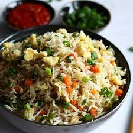

Fried Egg Rice Recipe

Egg fried rice is a great dish to have in your repertoire. It's not only tasty but also adaptable to your preferences and what you have on hand. Plus, it's a quick and satisfying meal, which is perfect for a busy college student. Enjoy experimenting with different variations!
Ingredients
- Cooked rice (about 2 cups)
- 2 eggs
- 2 tablespoons cooking oil
- 1/2 cup chopped vegetables
- 2 cloves of garlic (minced)
- 2 tablespoons soy sauce
- Salt and paper to taste
Instructions
- Heat the cooking oil in a pan or wok over medium-high heat.
- Add the minced garlic and stir-fry for about 30 seconds until it becomes fragrant.
- Push the garlic to the side of the pan and crack the eggs into the other side. Scramble the eggs until they're mostly cooked.
- Add the chopped vegetables to the pan and stir-fry for a few minutes until they start to soften.
- Add the cooked rice to the pan and stir-fry everything together, breaking up any clumps of rice.
- Drizzle the soy sauce over the rice and continue to stir-fry until the rice is evenly coated and heated through.
- Season with salt and pepper to taste.
- Once everything is well mixed and heated, your egg fried rice is ready to serve!
Back to main